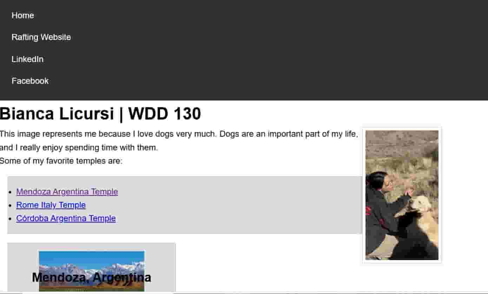
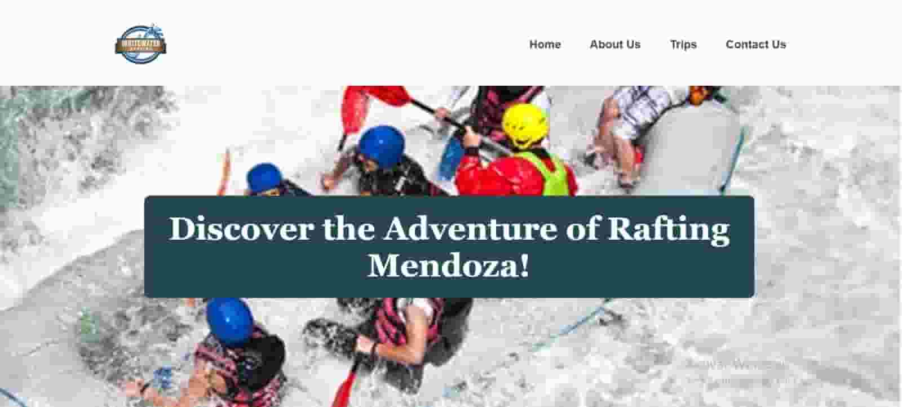

Bianca Licursi
About Me
Hello! My name is Bianca Licursi. I am from Mendoza, Argentina. I love dogs, learning new things, and exploring technology. I am currently studying web development through BYU-Pathway. I also enjoy social media management, makeup, and nail art. My goal is to develop my skills in programming and create useful and creative websites.
Web Development Projects


Throughout this course, I am learning how to create websites using HTML, CSS, and JavaScript. These projects help me practice web design, responsive layouts, and programming skills.